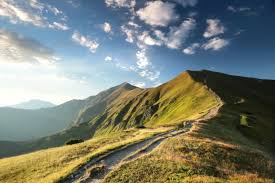
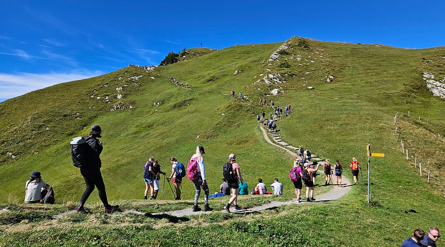

Trekking Memories
Take a look at our past trekking adventures and breathtaking views captured by our members.


Take a look at our past trekking adventures and breathtaking views captured by our members.